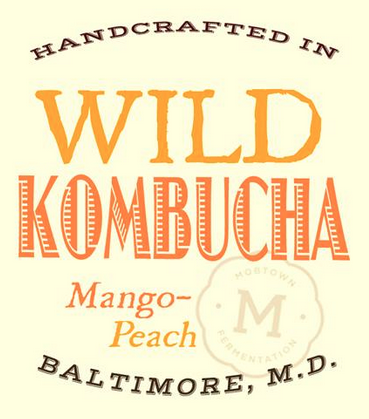
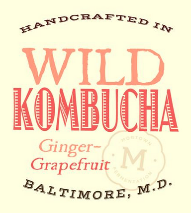

is a small Baltimore based company specializing in the art of fermentation. We brew our own unique brand of kombucha and currently have two flavors available: mango-peach and ginger-grapefruit. Our goal is to share this delicious and healthy drink with our community.
is to promote a healthier lifestyle by sharing our delicious and completely natural kombucha with our friends and community at affordable prices. Our unique blend is geared towards making Wild Kombucha enjoyable to the average Joe in addition to long time kombucha drinkers.
is a fermented drink that has been brewed and consumed for over two millennia. The revitalizing effects of the beverage were recognized and used by many cultures around the world. Modern day studies on the health benefits of consuming fermented foods have only proven our ancestors right. Kombucha is loaded with vitamins and acids that help strengthen the immune system. It has probiotics and enzymes that are known to bolster digestion and replenish the good bacteria in your gut. Kombucha also boosts liver function, because it contains the same acids that the liver releases to eliminate toxins from the body.
Visit us at 3600 Hickory Ave in Hampden
Bottles about to be filled with Wild Kombucha
A look inside our production facility
Enjoy Wild Kombucha in a glass
Wild Kombucha makes a great mixer
Jump start your morning with Wild Kombucha
Adam and Sergio first learned about kombucha in 2000 when their parents started brewing it at home. Sharing their curiosity and passion for fermentation, brewing kombucha became a family affair at their home in Baltimore. A few years later in 2009, when Sergio and Adam’s parents moved to Peru, they left the fermentation canisters and brewing tools with Adam. One day, while cleaning out the garage, he came across the kombucha equipment. He began reminiscing about how he used to brew kombucha with his family, and decided to give it a go. He was hooked. Seeing the brewing process as a puzzle, Adam began working diligently to master the art. Initially using friends and family as guinea pigs, he first perfected the process his parents taught him, and then began exploring the use of different flavors. He realized that the use of certain flavors allowed him to add a new dimension to the drink, while still highlighting the crisp and bubbly tones that make kombucha unique. It did not take long for his friends to taste the appeal. Over the next two years he supplied his drink to family, friends, and a group of Johns Hopkins students that had become regulars. As orders grew larger, and Adam grew busier with his job and band, he looked to Sergio to help out since he already knew the process. Eventually, brewing began taking up their weekends, friends of friends were ordering consistently, and word of their kombucha had spread throughout Hampden. Knowing that the company would need more help, Adam and Sergio pitched the idea to their childhood friend Sid in May 2014. Mobtown Fermentation and Wild Kombucha were born.
Cheers!
Kombucha is thought to have originated in Asia, during the rule of the Tsin Dynasty. It was called the Tea of Immortality, and was believed to give everlasting life to those who drank it.
Merchants travelling the Silk Road introduced Kombucha to India, Japan and Russia. Because of the many health benefits associated with drinking kombucha, the tea quickly became customary in many households across Asia. As a result of its rapid spread, kombucha became known by several different names including Tea Kvass, Mushroom Tea, Miracle Tea, and Elixer of Long Life.
A Korean physician is said to have cured the ailing Japanese Emperor Ingyo, using a fermented tea beverage. The result was a widespread consumption of kombucha throughout Japan. The Samurai class were particularly fond of kombucha. They considered it a form of Chi, a revitalizing life force, and would carry flasks of it into battle.
Mongol warriors in the armies of Genghis Khan drank fermented beverages to fuel them on military campaigns. At the height of it's power, the Mongol Empire stretched all the way from Hungary to China, so Mongol riders could sometimes be away from home and on the go for years on end.
If you place an order today, we can fill it as soon as
Adam: (410) 277-1786
Sergio: (240) 491-2083
mobtownfermentation